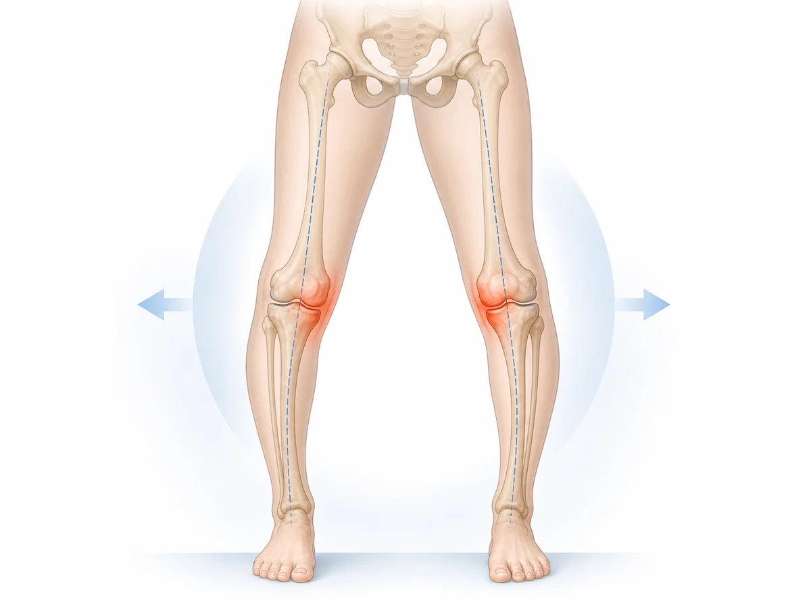

01
足の外側へ体重が偏る
足裏の接地が外側へ偏ると、膝の一部へ圧が集まりやすくなります。
膝の内側が痛い、歩くと膝が外へ開く、O脚が進んだ気がする方へ。見た目だけでなく、膝へ負担が集まる動きを確認します。
脚の形には骨格や成長、加齢などさまざまな要素が関係し、見た目だけで痛みの原因を決めることはできません。
一方で、立つ・歩くときの重心や股関節・足部の使い方によって、膝の内側や外側へ負担が偏ることがあります。
骨格そのものを真っすぐにすると断定するのではなく、どの場面で負担が集まるのかを確認することが大切です。

足裏の接地が外側へ偏ると、膝の一部へ圧が集まりやすくなります。
片脚で支えるときに骨盤が傾くと、膝の向きも変わりやすくなります。
歩くたびにねじれが加わり、内側や外側へ負担が偏る場合があります。
片側へ寄りかかる立ち方などで、一方の膝に負担が重なることがあります。
重心や足裏の接地が偏る
脚の向きがずれる
膝の一部へ圧が集中する
歩行や立位で痛みを感じる
これはO脚・膝のゆがみが起きる流れの一例です。原因や状態は一人ひとり異なるため、実際には腫れや痛む場所、関節の動き、筋肉の働き、日常動作などを確認する必要があります。
張っている膝まわりをほぐすと、一時的に楽になることがあります。
しかし、立ち方や足裏の接地、股関節の支え方が同じままだと、再び膝の同じ場所へ負担が偏ることがあります。
大切なのは、痛む場所だけでなく負担が集まる動作まで確認することです。
?????????????????????????????
脚の形や膝痛でも、急な変化や外傷を伴う場合は医療機関での確認が必要です。
同じO脚・膝のゆがみでも、困る動作や身体の状態は人によって異なります。
柏市の整体院ひざこぞうでは、痛む場所だけを施術するのではなく、姿勢、関節の動き、筋肉の働き、日常動作まで確認します。
カウンセリングと身体のチェックをもとに、現在の状態と施術方針を分かりやすくご説明します。

脚の見た目を無理に変えるのではなく、膝へ負担が集まりにくい立ち方・歩き方を身につけることを目指します。
動かす｜可動性
膝がねじれを補いすぎないよう、股関節と足首を動かしやすくします。
支える｜安定性
足裏の接地とお尻の働きを確認し、片側へ寄りかかりにくい支え方を練習します。
使う｜動作改善
膝とつま先の方向を確認し、日常で続けやすい重心移動をお伝えします。
痛みや腫れが出る動作、医療機関で言われたことなどをLINEで送っていただければ、来院前のご相談も可能です。
通院頻度は、痛みや腫れの強さ、続いている期間、生活環境、目指す状態によって異なります。
初回に身体の状態を確認したうえで、必要な頻度と期間の目安をご説明します。
無理に通院を勧めることはありませんので、ご希望や生活状況も含めてご相談ください。
脚の形は一人ひとり違います。見た目だけを変えようとするのではなく、膝の痛みや不安につながる立ち方、歩き方、支え方を確認します。
いつから気になるのか、どの動作で膝が痛むのか、見た目への不安、病院で説明された内容、目指したい生活を伺います。
立つ、歩く、階段、片脚で支える動作を見ながら、足裏の接地や股関節・膝・足首の向きを確認します。
股関節や足首の動き、片脚で身体を支える力、歩行時の重心移動を順番に見て、分かりやすく共有します。
手技だけでなく、膝へ負担が偏りにくい立ち方や歩き方の練習を、無理のない範囲で組み合わせます。
通院だけに頼らず、ご自身でも立ち方や歩き方を整えやすくなるよう、状態に合わせて提案します。
膝の内側や外側を強く揉むことが合わない場合があります。痛みや腫れがあるときは刺激の強さに注意が必要です。
骨格そのものを短期間で変えるような考え方ではなく、膝へ負担が集まりにくい動作を目指すことが大切です。
O脚体操や膝トレーニングでも、痛みが増える場合は中止してください。向きや深さの調整が必要なことがあります。
薬や医療機関での方針は自己判断で変更せず、医師や薬剤師の指示を優先してください。
外傷後に脚の形が急に変わった、強い痛みで歩けない、熱感がある場合は医療機関へご相談ください。
O脚や膝のゆがみが気になる場合でも、適した運動は身体の状態によって異なります。痛みや腫れが強くなる方法は避け、医師から運動制限を受けている場合は指示を優先してください。
鏡の前で立ち上がりや小さなスクワットを行い、膝だけを無理に内外へ押し込まないようにします。
長時間同じ立ち方が続くと負担が偏ることがあります。左右へ体重を分ける意識から始めます。
歩く量や階段の回数を減らし、痛みが落ち着く範囲で活動量を保ちます。
見た目だけを基準にせず、痛みや動きやすさの変化を見ながらセルフケアを選びましょう。
MEDICAL GUIDANCE
症状の出方には個人差があります。迷う場合や症状が強い場合は、まず医療機関へご相談ください。
次のような場合は、整体の予約より医療機関への相談を優先してください。
緊急ではなくても、早めの検査や診察が大切な状態があります。
医療機関との役割を分けながら、次のような相談に対応します。
このページは一般的な情報提供であり、診断を目的とするものではありません。症状や状態は一人ひとり異なるため、必要に応じて医療機関へご相談ください。
写真は左右にスライドできます


予約前に特に多い不安だけを、短くまとめました。
初回カウンセリング＋全身整体コース
カウンセリング・状態確認込み。まずは相談だけでも大丈夫です。
膝のつらさや脚の使い方を一緒に整理し、動きやすい身体づくりをサポートします。
LINEからご希望日時を送ってください。空き状況を確認して、こちらから返信いたします。
【受付時間】9:00〜19:00 【定休日】日曜
施術中は電話に出られないことがあります。後ほど折り返しお電話いたします。